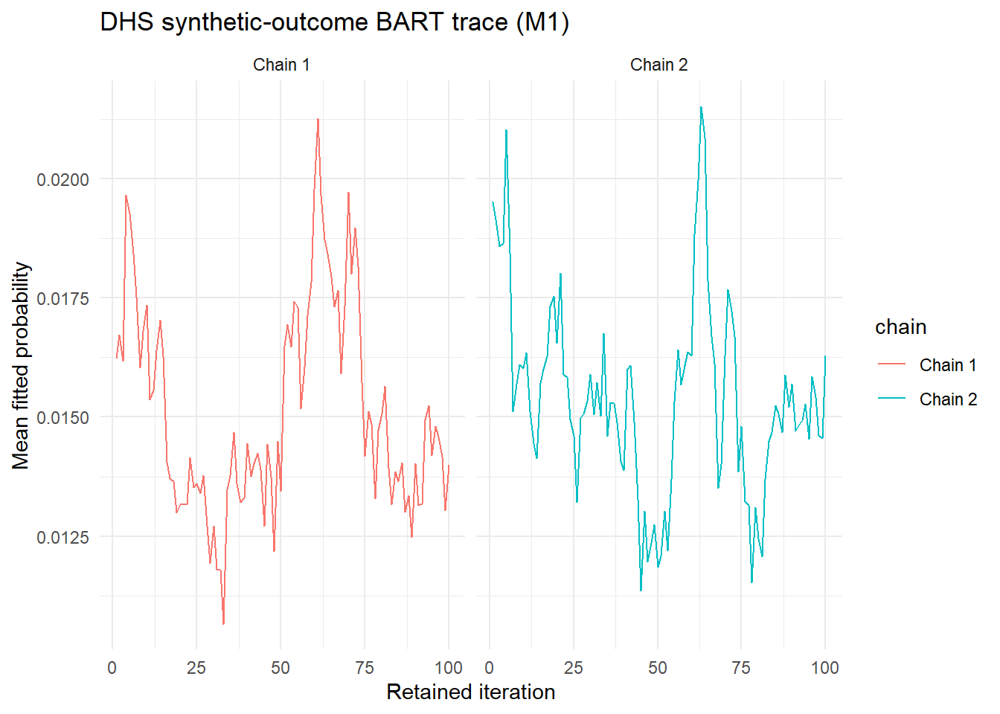
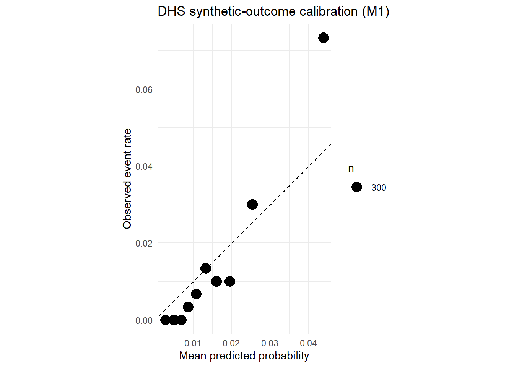

source("R/imports.R")
dhs_config <- yaml::read_yaml("config_seed_asd_harmonization.yaml")
analysis_config <- dhs_config$analysis
imputation_config <- dhs_config$imputation
input_file <- normalizePath(params$input_file, mustWork = TRUE)
stepwise_output <- file.path("outputs", "dhs_m1_stepwise")
dir.create(stepwise_output, recursive = TRUE, showWarnings = FALSE)
predictors <- analysis_config$predictors
predictor_names <- vapply(predictors, `[[`, character(1), "name")
covariate_names <- unlist(
analysis_config$adjustment_covariates,
use.names = FALSE
)
model_variables <- c(predictor_names, covariate_names)
outcome_name <- analysis_config$synthetic_outcome$name
identifier_name <- analysis_config$identifier
stopifnot(
length(imputation_config$overlap_variables) == 9L,
length(imputation_config$target_variables) == 15L,
length(model_variables) == 24L,
!anyDuplicated(model_variables),
setequal(
model_variables,
c(imputation_config$overlap_variables, imputation_config$target_variables)
)
)Study 1 DHS M1 step-by-step analysis
Synthetic-outcome pipeline test using one imputed DHS dataset
WarningSynthetic outcome only
The DHS input contains no observed ASD outcome. This document generates a fixed-seed, independent synthetic outcome solely to test the analysis workflow. Model estimates, diagnostics, and plots are not scientific results and must not be interpreted as evidence about ASD.
This document processes imputation M1 for step-by-step review. The separate run_dhs_bart_pipeline.R is intended for all five imputations and pooling their posterior draws. The full M1 BART settings require substantial memory; the default single-imputation run uses a clearly labeled smoke-test subset. Set model_mode: full to request the full configured M1 fit on all analytic rows.
1. Load helpers and DHS analysis configuration
The configuration defines five predictors and nineteen adjustment variables: the nine DHS/SEED overlap variables plus the fifteen imputed SEED targets.
variable_type <- function(name) {
configured_type <- imputation_config$variable_types[[name]]
if (!is.null(configured_type)) {
return(configured_type)
}
configured_type <- dhs_config$variables[[name]]$type
if (is.null(configured_type)) {
stop("No variable type configured for ", name, ".")
}
configured_type
}
covariates <- lapply(covariate_names, function(name) {
list(name = name, type = variable_type(name))
})
names(covariates) <- NULL
seed_style_config <- list(
predictors = predictors,
covariates = covariates,
outcome = list(
name = outcome_name,
type = "categorical",
reference = 0
),
missingness_indicators = character(),
population_priors = list(
pY1 = analysis_config$population_prevalence,
pY0 = 1 - analysis_config$population_prevalence
),
predictor_labels = as.list(setNames(predictor_names, predictor_names))
)2. Read and verify imputed DHS M1
raw_df <- readr::read_csv(
input_file,
show_col_types = FALSE,
progress = FALSE
)
required_columns <- c(
identifier_name,
"is_dhs",
model_variables,
imputation_config$target_variables
)
missing_columns <- setdiff(required_columns, names(raw_df))
if (length(missing_columns)) {
stop("Input is missing required columns: ", paste(missing_columns, collapse = ", "))
}
dhs_df <- dplyr::filter(raw_df, !is.na(is_dhs), is_dhs == 1)
if (!nrow(dhs_df)) {
stop("The input contains no DHS records (is_dhs == 1).")
}
if (anyNA(dhs_df[, imputation_config$target_variables, drop = FALSE])) {
stop("At least one of the fifteen imputed target variables is missing.")
}
knitr::kable(
data.frame(
input = input_file,
rows_in_file = nrow(raw_df),
DHS_rows = nrow(dhs_df),
overlap_variables = length(imputation_config$overlap_variables),
target_variables = length(imputation_config$target_variables),
target_missing_cells = sum(is.na(
dhs_df[, imputation_config$target_variables, drop = FALSE]
))
),
caption = "M1 input and target completeness check."
)| input | rows_in_file | DHS_rows | overlap_variables | target_variables | target_missing_cells |
|---|---|---|---|---|---|
| C:_REPO_1_dhs_dhs_m1.csv | 65608 | 65608 | 9 | 15 | 0 |
3. Create and persist the synthetic test outcome
The source synthetic_asd_flag field in the combined MICE CSV is blank for DHS. This document deliberately ignores that field and creates a separate ASD_flag using the prevalence and missingness parameters in the DHS configuration. The outcome file is saved and reused on later renders when its identifiers match M1, so analysis stages use the same labels.
labels_file <- file.path(stepwise_output, "synthetic_outcome_labels.csv")
dhs_ids <- as.character(dhs_df[[identifier_name]])
if (anyNA(dhs_ids) || anyDuplicated(dhs_ids)) {
stop("DHS identifiers must be non-missing and unique.")
}
reuse_labels <- FALSE
if (file.exists(labels_file)) {
saved_labels <- readr::read_csv(
labels_file,
show_col_types = FALSE,
progress = FALSE
)
reuse_labels <- all(c(identifier_name, outcome_name) %in% names(saved_labels)) &&
identical(as.character(saved_labels[[identifier_name]]), dhs_ids)
}
if (reuse_labels) {
outcome_labels <- saved_labels[[outcome_name]]
} else {
set.seed(as.integer(analysis_config$synthetic_outcome$seed))
outcome_labels <- stats::rbinom(
length(dhs_ids),
size = 1L,
prob = analysis_config$synthetic_outcome$prevalence
)
outcome_missing <- stats::runif(length(dhs_ids)) <
analysis_config$synthetic_outcome$missingness_rate
outcome_labels[outcome_missing] <- NA_integer_
saved_labels <- data.frame(
identifier = dhs_ids,
outcome = outcome_labels
)
names(saved_labels) <- c(identifier_name, outcome_name)
readr::write_csv(saved_labels, labels_file)
}
dhs_df[[outcome_name]] <- outcome_labels
data.frame(
outcome_source = if (reuse_labels) "reused saved synthetic labels" else
"new fixed-seed synthetic labels",
DHS_rows = nrow(dhs_df),
observed_positive_labels = sum(outcome_labels == 1L, na.rm = TRUE),
missing_outcome_labels = sum(is.na(outcome_labels)),
observed_prevalence = mean(outcome_labels == 1L, na.rm = TRUE),
scientific_outcome_available = FALSE
) outcome_source DHS_rows observed_positive_labels
1 new fixed-seed synthetic labels 65608 740
missing_outcome_labels observed_prevalence scientific_outcome_available
1 167 0.0113079 FALSE4. Coerce variables and build the analytic dataset
The M1 targets are already imputed. No additional imputation is performed in this document; rows with missing synthetic outcomes are excluded from model fitting.
coerced_result <- coerce_variable_types(dhs_df, seed_style_config)
coerced_df <- coerced_result$coerced_df
predictor_stats_df <- coerced_result$predictor_stats_df
missingness_result <- add_missingness_indicators(
coerced_df,
seed_style_config
)
indicated_df <- missingness_result$indicated_df
final_config <- missingness_result$config
imputed_df <- impute_missing_data(indicated_df, final_config)
analytic_df <- finalize_analytic_dataset(imputed_df, final_config)Dropped 167 rows with missing outcome (ASD_flag).if (anyNA(analytic_df[, model_variables, drop = FALSE])) {
stop("Missing model variables remain after preparation.")
}
if (length(unique(analytic_df[[outcome_name]])) != 2L) {
stop("The observed synthetic outcome must contain both binary classes.")
}
readr::write_csv(
predictor_stats_df,
file.path(stepwise_output, "m1_interim_predictor_stats.csv")
)
readr::write_csv(
analytic_df[
seq_len(min(10L, nrow(analytic_df))),
c(model_variables, outcome_name),
drop = FALSE
],
file.path(stepwise_output, "m1_interim_analytic_preview.csv")
)
interim_metadata <- data.frame(
stage = "data preparation complete",
input = input_file,
source_rows = nrow(dhs_df),
generated_outcome_positive = sum(dhs_df[[outcome_name]] == 1L, na.rm = TRUE),
generated_outcome_missing = sum(is.na(dhs_df[[outcome_name]])),
analytic_rows = nrow(analytic_df),
analytic_outcome_prevalence = mean(analytic_df[[outcome_name]] == 1L),
model_variables = length(model_variables),
model_value_missing = sum(
is.na(analytic_df[, model_variables, drop = FALSE])
),
synthetic_outcome_only = TRUE
)
readr::write_csv(
interim_metadata,
file.path(stepwise_output, "m1_interim_metadata.csv")
)
interim_metadata stage
1 data preparation complete
input
1 C:\\Users\\XXW306\\Cochran_REPO\\wadsi\\study_1\\outputs\\imputed_dhs\\imputed_dhs_m1.csv
source_rows generated_outcome_positive generated_outcome_missing
1 65608 740 167
analytic_rows analytic_outcome_prevalence model_variables model_value_missing
1 65441 0.0113079 24 0
synthetic_outcome_only
1 TRUEknitr::kable(
data.frame(
source_rows = nrow(dhs_df),
excluded_for_missing_outcome = sum(is.na(dhs_df[[outcome_name]])),
analytic_rows = nrow(analytic_df),
model_variables = length(model_variables),
missing_model_values = sum(
is.na(analytic_df[, model_variables, drop = FALSE])
),
analytic_outcome_prevalence = mean(analytic_df[[outcome_name]] == 1L)
),
caption = "Prepared M1 analytic dataset. Outcome labels are synthetic."
)| source_rows | excluded_for_missing_outcome | analytic_rows | model_variables | missing_model_values | analytic_outcome_prevalence |
|---|---|---|---|---|---|
| 65608 | 167 | 65441 | 24 | 0 | 0.0113079 |
variable_summary <- data.frame(
variable = model_variables,
role = c(
rep("Predictor", length(predictors)),
rep("Adjustment covariate", length(covariate_names))
),
type = c(
vapply(final_config$predictors, `[[`, character(1), "type"),
vapply(final_config$covariates, `[[`, character(1), "type")
),
missing_after = vapply(model_variables, function(name) {
sum(is.na(analytic_df[[name]]))
}, integer(1))
)
readr::write_csv(
variable_summary,
file.path(stepwise_output, "m1_interim_variable_summary.csv")
)
knitr::kable(
variable_summary,
caption = "M1 model variables after data preparation."
)| variable | role | type | missing_after | |
|---|---|---|---|---|
| dr_agebir_mx | dr_agebir_mx | Predictor | continuous | 0 |
| dr_agebir_fx | dr_agebir_fx | Predictor | continuous | 0 |
| dr_gawks | dr_gawks | Predictor | continuous | 0 |
| gest_dm_bin | gest_dm_bin | Predictor | categorical | 0 |
| DR_PREGHTN | DR_PREGHTN | Predictor | categorical | 0 |
| dr_sex_cx | dr_sex_cx | Adjustment covariate | categorical | 0 |
| dr_prevlb_br_3c | dr_prevlb_br_3c | Adjustment covariate | categorical | 0 |
| dr_biredu_mx_5c | dr_biredu_mx_5c | Adjustment covariate | categorical | 0 |
| dr_race_mx_5c | dr_race_mx_5c | Adjustment covariate | categorical | 0 |
| DR_INF_FV_PG_MX | DR_INF_FV_PG_MX | Adjustment covariate | categorical | 0 |
| dr_anx_mmh_mx | dr_anx_mmh_mx | Adjustment covariate | categorical | 0 |
| dr_dep_mmh_mx | dr_dep_mmh_mx | Adjustment covariate | categorical | 0 |
| dr_pg_incpovrat_up_4c | dr_pg_incpovrat_up_4c | Adjustment covariate | categorical | 0 |
| DR_pgsASD_CX | DR_pgsASD_CX | Adjustment covariate | continuous | 0 |
| DR_gwaPC1_CX | DR_gwaPC1_CX | Adjustment covariate | continuous | 0 |
| DR_gwaPC2_CX | DR_gwaPC2_CX | Adjustment covariate | continuous | 0 |
| DR_gwaPC3_CX | DR_gwaPC3_CX | Adjustment covariate | continuous | 0 |
| DR_gwaPC4_CX | DR_gwaPC4_CX | Adjustment covariate | continuous | 0 |
| DR_gwaPC5_CX | DR_gwaPC5_CX | Adjustment covariate | continuous | 0 |
| DR_gwaPC6_CX | DR_gwaPC6_CX | Adjustment covariate | continuous | 0 |
| DR_gwaPC7_CX | DR_gwaPC7_CX | Adjustment covariate | continuous | 0 |
| DR_gwaPC8_CX | DR_gwaPC8_CX | Adjustment covariate | continuous | 0 |
| DR_gwaPC9_CX | DR_gwaPC9_CX | Adjustment covariate | continuous | 0 |
| DR_gwaPC10_CX | DR_gwaPC10_CX | Adjustment covariate | continuous | 0 |
knitr::kable(
predictor_stats_df,
digits = 2,
caption = "Continuous predictor summaries for M1."
)| predictor | mean | sd | q10 | q90 |
|---|---|---|---|---|
| dr_agebir_mx | 29.61 | 5.23 | 23 | 36.00 |
| dr_agebir_fx | 31.75 | 5.99 | 24 | 39.05 |
| dr_gawks | 38.55 | 2.04 | 36 | 41.00 |
5. Fit the M1 BART model
This step uses the BART settings in the DHS configuration. With the default settings it runs eight chains, 30,000 burn-in iterations, and 12,000 post-burn iterations thinned by 12. Set the Quarto parameter fit_model: false to render just the data-preparation and interim review stages.
if (isTRUE(params$fit_model)) {
model_mode <- match.arg(params$model_mode, c("smoke", "full"))
bart_settings <- analysis_config$bart
if (model_mode == "full") {
nchain <- as.integer(bart_settings$nchain)
nskip <- as.integer(bart_settings$nskip)
ndpost <- as.integer(bart_settings$ndpost)
keepevery <- as.integer(bart_settings$keepevery)
fit_df <- analytic_df
} else {
smoke_rows <- min(as.integer(params$smoke_rows), nrow(analytic_df))
if (smoke_rows < 2L) {
stop("smoke_rows must be at least two.")
}
set.seed(as.integer(bart_settings$seed) + 1L)
fit_indices <- sort(sample(seq_len(nrow(analytic_df)), smoke_rows))
fit_df <- analytic_df[fit_indices, , drop = FALSE]
nchain <- 2L
nskip <- 500L
ndpost <- 100L
keepevery <- 1L
}
if (ndpost %% keepevery != 0L) {
stop("Configured ndpost must be divisible by keepevery.")
}
retained_per_chain <- ndpost %/% keepevery
x_train <- fit_df[, model_variables, drop = FALSE]
y_train <- as.integer(fit_df[[outcome_name]])
model_path <- file.path(
stepwise_output,
paste0("dhs_bart_fit_m1_", model_mode, ".rds")
)
bart_fit <- dbarts::bart(
x.train = x_train,
y.train = y_train,
keeptrees = TRUE,
verbose = TRUE,
nchain = nchain,
nthread = nchain,
nskip = nskip,
ndpost = ndpost,
keepevery = keepevery,
seed = as.integer(bart_settings$seed)
)
bart_fit$fit$storeState()
saveRDS(bart_fit, model_path)
data.frame(
model_file = normalizePath(model_path),
model_mode = model_mode,
training_rows = nrow(fit_df),
predictors = length(predictors),
adjustment_covariates = length(covariate_names),
chains = nchain,
burn_in_iterations = nskip,
post_burn_iterations = ndpost,
retained_draws_per_chain = retained_per_chain,
retained_draws_total = nchain * retained_per_chain
)
} else {
cat("Model fitting skipped by params$fit_model = FALSE.\n")
}
Running BART with binary y
number of trees: 200
number of chains: 2, default number of threads 2
tree thinning rate: 1
Prior:
k prior fixed to 2.000000
power and base for tree prior: 2.000000 0.950000
use quantiles for rule cut points: false
proposal probabilities: birth/death 0.50, swap 0.10, change 0.40; birth 0.50
data:
number of training observations: 3000
number of test observations: 0
number of explanatory variables: 39
Cutoff rules c in x<=c vs x>c
Number of cutoffs: (var: number of possible c):
(1: 100) (2: 100) (3: 100) (4: 100) (5: 100)
(6: 100) (7: 100) (8: 100) (9: 100) (10: 100)
(11: 100) (12: 100) (13: 100) (14: 100) (15: 100)
(16: 100) (17: 100) (18: 100) (19: 100) (20: 100)
(21: 100) (22: 100) (23: 100) (24: 100) (25: 100)
(26: 100) (27: 100) (28: 100) (29: 100) (30: 100)
(31: 100) (32: 100) (33: 100) (34: 100) (35: 100)
(36: 100) (37: 100) (38: 100) (39: 100)
offsets:
reg : 0.00 0.00 0.00 0.00 0.00
Running mcmc loop:
[1] iteration: 100 (of 100)
[2] iteration: 100 (of 100)
total seconds in loop: 2.634749
Tree sizes, last iteration:
[1] 1 2 2 4 2 2 2 2 2 1 3 2 4 2 2 2 2 3
3 2 2 3 2 2 2 2 2 2 2 3 3 2 2 2 4 2 1 2
3 2 2 2 3 2 2 2 2 2 2 2 3 1 3 4 2 2 3 4
3 3 3 2 3 2 4 2 4 2 3 2 2 2 3 4 1 3 1 2
2 2 2 2 4 2 3 3 2 4 2 3 2 2 1 2 3 3 2 2
3 4 2 2 2 2 1 2 2 2 2 2 5 2 3 2 2 3 2 2
3 2 2 2 3 3 4 3 2 5 2 3 2 2 3 4 3 6 2 5
2 2 2 2 4 3 2 2 3 1 3 2 6 2 2 2 2 4 3 2
2 4 3 2 3 3 4 3 2 2 2 4 2 1 2 2 2 2 2 3
3 2 2 2 2 2 2 3 2 2 2 2 1 2 2 2 2 3 2 2
3 2
[2] 2 2 3 2 2 2 2 2 2 3 2 3 2 2 2 2 3 2
3 2 1 2 2 2 3 2 2 2 2 3 2 2 2 2 1 3 3 2
2 1 4 2 2 2 2 3 2 2 2 2 1 2 3 3 1 3 2 3
3 3 2 2 2 3 3 2 4 2 2 2 4 4 4 2 2 2 2 3
3 4 3 2 2 3 3 2 2 2 2 2 2 2 2 2 2 3 2 2
3 3 2 1 4 2 2 2 3 2 2 3 2 2 2 2 2 4 2 4
3 2 2 2 4 2 2 2 4 2 2 1 4 2 2 2 2 2 3 1
2 2 2 3 3 3 3 2 3 3 2 2 2 2 2 2 4 4 2 2
2 1 2 2 1 2 2 2 1 2 2 2 2 3 2 2 2 2 1 2
4 2 3 1 2 3 2 3 2 2 1 1 3 2 2 2 3 4 2 3
3 2
Variable Usage, last iteration (var:count):
(1: 13) (2: 18) (3: 14) (4: 9) (5: 11)
(6: 10) (7: 15) (8: 13) (9: 17) (10: 20)
(11: 15) (12: 16) (13: 26) (14: 15) (15: 18)
(16: 12) (17: 10) (18: 13) (19: 9) (20: 15)
(21: 18) (22: 9) (23: 10) (24: 14) (25: 16)
(26: 13) (27: 5) (28: 18) (29: 11) (30: 15)
(31: 16) (32: 14) (33: 18) (34: 13) (35: 13)
(36: 20) (37: 12) (38: 12) (39: 13)
DONE BART model_file
1 C:\\Users\\XXW306\\Cochran_REPO\\wadsi\\study_1\\outputs\\dhs_m1_stepwise\\dhs_bart_fit_m1_smoke.rds
model_mode training_rows predictors adjustment_covariates chains
1 smoke 3000 5 19 2
burn_in_iterations post_burn_iterations retained_draws_per_chain
1 500 100 100
retained_draws_total
1 2006. Review M1 trace and calibration
Trace and calibration outputs are computed in chunks to avoid materializing a second full posterior prediction matrix.
if (isTRUE(params$fit_model)) {
latent_draws <- bart_fit$yhat.train
expected_draws <- nchain * retained_per_chain
if (nrow(latent_draws) != expected_draws &&
ncol(latent_draws) == expected_draws) {
latent_draws <- t(latent_draws)
}
if (nrow(latent_draws) != expected_draws ||
ncol(latent_draws) != nrow(fit_df)) {
stop("Unexpected BART training prediction dimensions.")
}
draw_mean_probability <- numeric(expected_draws)
fitted_probability <- numeric(nrow(fit_df))
chunk_size <- 400L
for (start in seq.int(1L, nrow(fit_df), by = chunk_size)) {
rows <- start:min(start + chunk_size - 1L, nrow(fit_df))
probability <- stats::pnorm(latent_draws[, rows, drop = FALSE])
draw_mean_probability <- draw_mean_probability +
rowMeans(probability) * length(rows) / nrow(fit_df)
fitted_probability[rows] <- colMeans(probability)
}
chain_draws <- matrix(
draw_mean_probability,
nrow = retained_per_chain,
ncol = nchain
)
convergence <- data.frame(
quantity = "mean_fitted_probability",
rhat = posterior::rhat(chain_draws),
ess_bulk = posterior::ess_bulk(chain_draws),
ess_tail = posterior::ess_tail(chain_draws),
chains = nchain,
retained_draws_per_chain = retained_per_chain
)
readr::write_csv(
convergence,
file.path(stepwise_output, "m1_bart_convergence.csv")
)
convergence
} quantity rhat ess_bulk ess_tail chains
1 mean_fitted_probability 1.033397 21.08704 78.71565 2
retained_draws_per_chain
1 100if (isTRUE(params$fit_model)) {
trace_data <- do.call(rbind, lapply(seq_len(nchain), function(chain) {
draw_indices <- ((chain - 1L) * retained_per_chain + 1L):
(chain * retained_per_chain)
data.frame(
iteration = seq_len(retained_per_chain),
mean_fitted_probability = draw_mean_probability[draw_indices],
chain = factor(paste("Chain", chain))
)
}))
trace_plot <- ggplot2::ggplot(
trace_data,
ggplot2::aes(iteration, mean_fitted_probability, colour = chain)
) +
ggplot2::geom_line(linewidth = 0.45) +
ggplot2::facet_wrap(~chain, ncol = 2) +
ggplot2::labs(
title = "DHS synthetic-outcome BART trace (M1)",
x = "Retained iteration",
y = "Mean fitted probability"
) +
ggplot2::theme_minimal()
ggplot2::ggsave(
file.path(stepwise_output, "m1_bart_trace.png"),
trace_plot,
width = 9,
height = 6,
dpi = 150
)
trace_plot
}
if (isTRUE(params$fit_model)) {
calibration_data <- data.frame(
fitted_probability = fitted_probability,
observed_outcome = y_train
)
calibration_data$decile <- dplyr::ntile(
calibration_data$fitted_probability,
10
)
calibration_summary <- dplyr::summarise(
dplyr::group_by(calibration_data, decile),
n = dplyr::n(),
mean_predicted = mean(fitted_probability),
observed_rate = mean(observed_outcome),
.groups = "drop"
)
readr::write_csv(
calibration_summary,
file.path(stepwise_output, "m1_bart_calibration.csv")
)
calibration_plot <- ggplot2::ggplot(
calibration_summary,
ggplot2::aes(mean_predicted, observed_rate)
) +
ggplot2::geom_abline(
slope = 1,
intercept = 0,
linetype = "dashed"
) +
ggplot2::geom_point(ggplot2::aes(size = n)) +
ggplot2::coord_equal() +
ggplot2::labs(
title = "DHS synthetic-outcome calibration (M1)",
x = "Mean predicted probability",
y = "Observed event rate"
) +
ggplot2::theme_minimal()
ggplot2::ggsave(
file.path(stepwise_output, "m1_bart_calibration.png"),
calibration_plot,
width = 7,
height = 6,
dpi = 150
)
calibration_plot
}
The files written to outputs/dhs_m1_stepwise/ are a single-imputation development run. Use run_dhs_bart_pipeline.R for the configured multi- imputation analysis; do not treat M1-only summaries as pooled results.